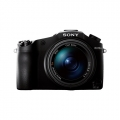

器材库 > 不可换镜头数码相机 > RX10 II

规格总览
发布日期
2015-06-11
厂家推荐价格
7,899.00 （人民币）
影像规格
影像传感器
Exmor RS CMOS
影像传感器尺寸
1英寸（13.2×8.8mm）
有效像素
约2020万
静态图像格式
JPEG, RAW
静态图像尺寸
[3:2] 5472×3648 / 3888×2592 / 2736×1824 [16:9] 5472×3080 / 3648×2056 / 2720×1528 [4:3] 4864×3648 / 3648×2736 / 2592×1944 / VGA [1:1] 3648×3648 / 2544×2544 / 1920×1920
短片格式
MP4, AVCHD 2.0, XAVC S
短片尺寸
AVCHD: 1920×1080,50p / 1920×1080,50i / 1920×1080,50i / 1920×1080,25p / 1920×1080,25p XAVC S 4K: 3840x2160,25p XAVC S HD: 1920x1080,50p / 1920x1080,25p / 1920x1080,100p MP4: 1920x1080,50p / 1920x1080,25p / 1280x720,25p
防抖系统
[静态影像] 光学防抖[动态影像] 光学防抖(智能增强/增强/标准/关)
镜头和对焦
镜头结构
14片/11组
非球面镜片
7片
焦距
8.8mm-73.3mm
等效35mm画幅焦距
24mm-200mm
最大光圈
f/2.8
光学变焦
8.3倍
数码变焦
[静态影像]20M 约33倍/10M 约46倍/5M 约66倍/VGA 约126倍[动态影像]约33倍
最近对焦距离
广角3cm, 长焦25cm
对焦模式
单次AF/连续AF/DMF/手动对焦
曝光控制
测光模式
点测光, 多重测光, 中心测光
曝光模式
自动(智能自动/增强自动)/程序自动/光圈优先/快门优先/手动曝光/调出存储/动态影像(程序自动/光圈优先/快门优先/手动曝光)/高帧速率(程序自动/光圈优先/快门优先/手动曝光)/扫描全景/场景选择
场景模式
肖像/运动/微距/风景/黄昏/夜景/手持夜景/夜景肖像/动作防抖
快门速度
智能自动(4秒 - 1/3200秒)/程序自动(30秒 - 1/3200秒) /光圈优先(8秒 - 1/3200秒)/快门优先(30秒 - 1/3200秒)/手动曝光(B门,30秒- 1/3200秒)
曝光补偿
±3EV以1/3EV级调整
ISO感光度
自动(ISO 100-12800,可限定上下值),100/125/160/200/250/320/400/500/640/800/1000/1250/1600/2000/2500/3200/4000/5000/6400/8000/10000/12800 (可扩展至 ISO 64/80),多帧降噪: 自动(ISO 100-12800),100/ 200/400/800/1600/3200/6400/12800/25600
白平衡
自动/日光/阴影/阴天/白炽灯/荧光灯(暖白色)/荧光灯(冷白色)/荧光灯(日光白色)/荧光灯(日光)/ 闪光灯 /(色温/滤光片)/自定义/自定义设置
连拍
最快约14张/秒
拍摄模式
单张拍摄/连拍/速度优先连拍/自拍定时/自拍定时(连拍)/连续阶段曝光/单拍阶段曝光/白平衡阶段曝光/DRO阶段曝光
创意滤镜
玩具相机/流行色彩/分色/复古照片/柔光亮调/局部彩色/强反差单色/柔焦/HDR绘画/丰富色调黑白/微缩景观/水彩画/插图
闪光灯
内置闪光灯
弹出式
闪光涵盖范围
ISO 自动模式:约1.0m 到10.2m;ISO 12800:可达约20.4m
取景规格
取景器
电子取景器
取景器像素
约236万
LCD类型
Xtra Fine LCD
LCD尺寸
3.0英寸
LCD像素
约123万
LCD特性
翻转屏
亮度调节级数
手动(5档)/晴朗天气
文件输入/输出
存储卡
MS/MS PRO记忆棒, SD/SDHC, SDXC
数据接口
USB2.0
视频/音频接口
Micro HDMI 接口
无线功能
Wi-Fi, NFC
配件端口
热靴, 耳机, 麦克风输入端子
电源
电池
NP-FW50
续航能力
[静态影像] 约400张/约200分钟(LCD),约360张/约180分钟(取景器) [动态影像] 约130分钟(LCD)/约135分钟(取景器)
外观
颜色
黑色
尺寸
129.0×88.1×102.2mm
重量
仅机身约770g / 含电池和存储卡约813g
其它
附件
锂离子电池组 NP-FW50,电源适配器AC-UB10 ,Micro USB 连接线,肩带,镜头盖,热靴盖,遮光罩,使用说明书,保修卡
huangshe2016-07-15 11:334.5 分
操作性 3.50功能性 4.50美观性 4.00趣味性 4.50耐用性 4.50性价比 5.00解像力 5.00色彩还原 5.00
产品图 / 样片
RX10 II
评测 / 相关文章
该产品暂无存档的评测文章
相关文章
- ［资讯］日本选出2016最佳相机与镜头 （存档）
- ［试用］火眼金睛美景随行 索尼黑卡RX10II冬季有约 （原站已下线）
- ［试用］新时代4K双雄 索尼RX100IV和RX10II评测 （原站已下线）
- ［资讯］索尼发布RX100IV与RX10 II （存档）